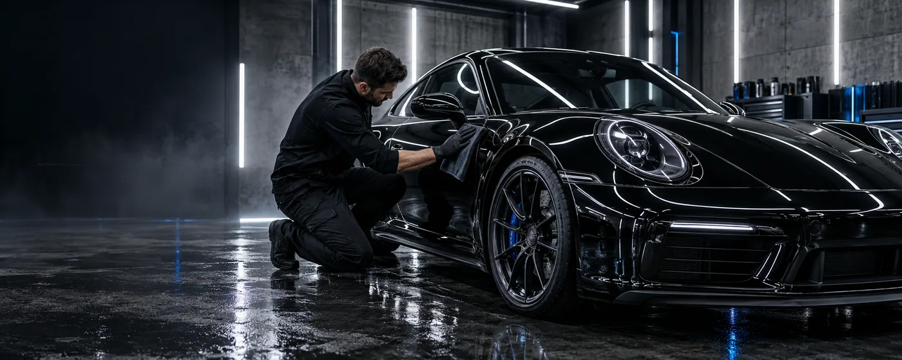

PREMIUM AUTO CARE / BRATISLAVADETAILING
DETAILING
WITHOUT
COMPROMISE.
Precision correction, lasting protection and a finish that changes how your car feels.
PAINT CORRECTION • CERAMIC COATING • INTERIOR DETAIL • PPF PREPARATION • PAINT CORRECTION •
Not a car wash.
A controlled process.
Every vehicle begins with an inspection. We choose the right combination of decontamination, correction and protection for the paint, usage and result you expect.
RESET
Thorough exterior decontamination and protected finish for a clean restart.
- Safe hand wash
- Iron & tar removal
- Paint cleansing
- 3-month sealant
REFINE
Single-stage machine polish for gloss, clarity and reduced light defects.
- Full decontamination
- One-step correction
- Panel preparation
- 12-month ceramic coating
OBSIDIAN
Multi-stage correction and long-term protection for demanding finishes.
- Detailed inspection
- Multi-stage correction
- Wheel & glass coating
- 3-year ceramic coating
03 / PROCESSMeasured.
Measured.
Corrected.
Protected.
- 01
Inspect
We assess the paint, interior and your expectations.
- 02
Prepare
Every surface is safely cleaned and decontaminated.
- 03
Correct
Defects are reduced through controlled machine polishing.
- 04
Protect
The finish is sealed, cured and inspected under focused light.
THE DIFFERENCE
IS IN THE LIGHT.
Drag the control to compare an illustrative finish before and after paint correction.
BEFORE
AFTER
05 / REQUEST A QUOTETell us about
Tell us about
your car.
Choose a package and share a few details. We will respond with a realistic recommendation and price range.
OOBSIDIANDETAIL LAB
Studio
Bratislava, Slovakia
Mon–Sat · 08:00–19:00
Contact
Back to top ↑+421 900 000 044
studio@obsidiandetail.sk